CSS(Cascading Style Sheets)는 HTML과 함께 웹 표준의 기본 개념입니다. HTML
이 텍스트나 이미지, 표 같은 각 요소를 웹 문서에 넣어 뼈대를 만드는 것이라면 CSS는 텍스트
색상이나 크기, 이미지 크기나 위치, 표 색상, 배치 방법 등 웹 문서의 디자인 요소를 담당하
죠. 웹 문서에 생기를 불어 넣는 CSS를 기본 개념부터 차근차근 살펴보겠습니다.
CSS 기초
스타일 형식
- (선택자) { (스타일 속성): (속성 값); } 형식으로 작성함
표기 방법
- 스타일 속성은 속성 값을 입력 후 만드시 세미콜론(;)을 붙혀야 함
- 아래 두 개의 사진은 형태는 다르지만 똑같은 스타일
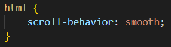
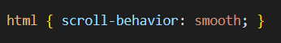
주석
- 주석은 문장의 왼쪽은 (/*)기호, 오른쪽은 (*/)기호로 감쌈
- 한 줄이 아닌 여러줄로도 쓸 수 있음
- Ctrl + / 로 한 줄 전체를 빠르게 주석으로 만들 수 있음
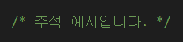
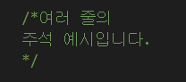
스타일 시트
- 스타일은 내부 스타일 시트, 외부 스타일 시트, 인라인 스타일이 있음
내부 스타일 시트
- <head>태그 안에 <style>태그를 사용하여 안에 스타일을 지정함
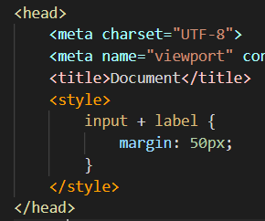 외부 스타일 시트
- 여러 HTML의 스타일이 중복이 될 때 하나의 외부 스타일 시트를 사용함
- 파일의 확장자는 .css 임
- 외부 스타일 시트를 연결할 때는 HTML의 <head>태그 안에 <link>를 사용하여 연결함
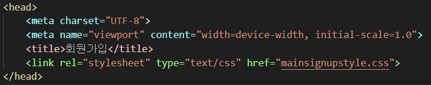 인라인 스타일
- 스타일 시트를 사용하지 않고 직접 태그안에 스타일 속성을 집어넣어서 스타일을 지정
- style="속성: 속성 값;" 을 사용
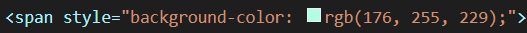
선택자
- 특정 부분만 스타일을 지정하고 싶을 때 쓰는 요소
전체(*) 선택자
- * { 스타일 속성: 속성 값; } 을 사용하며 모든 요소에 스타일을 적용시킴
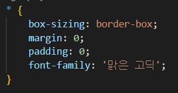 태그 선택자
- 특정 태그를 사용한 요소에 스타일을 적용시킴
- (태크) { 스타일 속성: 속성 값; } 을 사용함
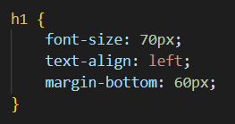 클래스 선택자
- 특정 클래스를 사용한 요소에 스타일을 적용시킴
- 하나의 클래스는 중복이 가능하며, 모든 태그에 사용이 가능함
- .(태크) { 스타일 속성: 속성 값; } 을 사용함
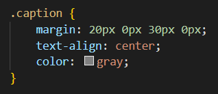 id 선택자
- 특정 id를 사용한 요소에 스타일을 적용시킴
- 하나의 id는 중복이 불가능하며, 하나의 id는 태그 한 개에만 사용할 수 있음
- #(태크) { 스타일 속성: 속성 값; } 을 사용함
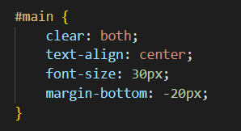 그룹 선택자
- 여러 태그들을 쉼표(,)로 묶어서 요소에 스타일을 적용시킴
- (태크1), (태그2), ··· { 스타일 속성: 속성 값; } 을 사용함
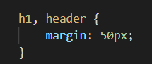
케스케이팅
스타일 우선순위 중요도
1순위) 사용자 스타일 시트의 중요 스타일
2순위) 제작자 스타일 시트의 중요 스타일(!important )
3순위) 제작자 스타일 시트의 일반 스타일
4순위) 기본적인 브라우저 스타일 시트
적용범위
1순위) 인라인 스타일
2순위) id 스타일
3순위) 클래스 스타일
4순위) 태그 스타일
소스
- 소스에서 나중에 온 소스가 먼저 온 소스를 덮어씀
스타일 상속
- 자식 요소에서 스타일을 지정하지 않은 경우 부모 요소에 있는 스타일이 자식 요소로 전달됨
- 하지만 모든 스타일이 상속 되는 것은 아님(대표적으로 background )
CSS모듈
- 최신버전에만 적용이 되는 웹브라우저 태그들이 존재하여 브라우저 접두사를 사용함
접두사
설명
-webkit-
웹키드 방식 브라우저용(사파리, 크롬)
-moz-
게코 방식 브라우저용(모질라, 파이어폭스)
-o-
오페라 브라우저
-ms-
마이크로소프트 인터넷 익스플로러
- -prefix-free 라는 자바스크립트 파일을 사용하면 자동으로 접두사를 붙여주지만 별도의 설치가 필요함